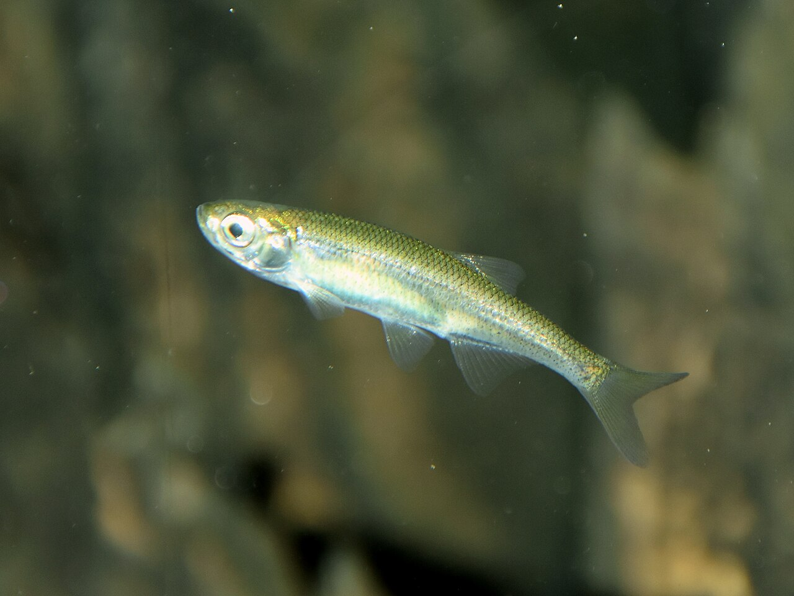

Rozpoznawanie
Najważniejsze cechy
Jest bardzo smukła, srebrzysta i bocznie spłaszczona, z pyskiem skierowanym ku górze. Linia boczna jest krótka, a boki błyszczą w świetle. Od uklei odróżniają ją m.in. położenie pyska i krótsza linia boczna, lecz pojedyncza cecha nie powinna być podstawą decyzji o zabraniu ryby.
Siedlisko i występowanie
Gdzie żyje
Spotyka się ją w płytkich, spokojnych partiach jezior, stawów, starorzeczy i wolnych rzek, zazwyczaj blisko roślinności. Zasięg w Polsce jest rozproszony, a lokalne stanowiska mogą znikać po przekształceniu brzegów lub pogorszeniu jakości wody.
Biologia i rola w ekosystemie
Pokarm i rozród
Tworzy ławice w toni i zbiera drobny plankton oraz owady z powierzchni. Rozmnaża się od późnej wiosny; samce mogą pilnować ikry składanej na roślinach lub innych elementach podłoża. Małe rozmiary nie oznaczają małego znaczenia — jest pokarmem drapieżników.
Ochrona, prawo i znaczenie dla wędkarza
Status i zagrożenia
Słonecznica jest gatunkiem objętym systemem ochrony siedliskowej, a jej stanowiska wymagają ochrony spokojnych, roślinnych wód. Globalna ocena IUCN i krajowe przepisy mają różny zakres, dlatego stosuje się aktualny akt prawny i regulamin miejsca.
Odpowiedzialne postępowanie
Nie wolno celowo pozyskiwać ani zatrzymywać słonecznicy. Przypadkowy przyłów należy wypuścić natychmiast, bez stosowania jej jako przynęty. W razie wątpliwości między słonecznicą a ukleją bezpiecznym wyborem jest wypuszczenie ryby.
FAQ — najczęstsze pytania
Jak odróżnić słonecznicę od uklei?
Słonecznica ma pysk skierowany ku górze i wyraźnie krótszą linię boczną. Jest bardzo smukła, srebrzysta i bocznie spłaszczona, a boki błyszczą w świetle. Pojedyncza cecha nie powinna jednak przesądzać o zabraniu ryby — przy wątpliwości bezpiecznym wyborem jest wypuszczenie.
Czy słonecznica jest chroniona?
Tak, jest gatunkiem objętym systemem ochrony siedliskowej, więc nie wolno jej celowo pozyskiwać ani zatrzymywać. Globalna ocena IUCN i przepisy krajowe mają różny zakres, dlatego stosuje się aktualny akt prawny oraz regulamin konkretnego miejsca.
Czy słonecznicy można użyć jako przynęty?
Nie. Przypadkowy przyłów należy wypuścić natychmiast i nie wolno stosować tej ryby jako przynęty. Ponieważ bywa mylona z ukleją, ostrożność dotyczy każdej drobnej, srebrzystej ryby z roślinnych zatok.
Gdzie żyje słonecznica?
Spotyka się ją w płytkich, spokojnych partiach jezior, stawów, starorzeczy i wolnych rzek, zwykle blisko roślinności. Tworzy ławice w toni i zbiera drobny plankton oraz owady z powierzchni. Zasięg w Polsce jest rozproszony, a stanowiska znikają po przekształceniu brzegów lub pogorszeniu jakości wody.
Źródła i weryfikacja
Tożsamość i zasięg: FishBase: Leucaspius delineatus oraz GBIF: Leucaspius delineatus. Ochrona: polski akt prawny wskazany poniżej. Dostęp i sprawdzenie: 2026-07-24. Opisy są edukacyjne: źródła globalne nie potwierdzają stanu konkretnego stanowiska.
Ochrona i kontakt z rybą: Ten gatunek nie jest celem amatorskiego połowu ani materiałem na przynętę. W razie przyłowu trzeba go natychmiast i ostrożnie uwolnić w miejscu złowienia. Aktualny zakres ochrony potwierdza rozporządzenie w sprawie ochrony gatunkowej zwierząt; dodatkowe zakazy mogą wynikać z regulaminu wody.
Pochodzenie zdjęcia: NasserHalaweh, CC BY-SA 4.0; strona pliku i warunki licencji. Lokalny JPG jest zachowanym plikiem źródłowym, a pliki .webp i .avif są jego technicznymi wariantami.
Tożsamość biologiczna i źródła
Nazwa łacińska: Leucaspius delineatus. Grupa atlasu: łososiowate i inne. Alias: słonecznica pospolita, sunbleak.
Źródła: FishBase: Leucaspius delineatusGBIF: Leucaspius delineatus. Dostęp: 2026-07-17. Zakres: tożsamość taksonomiczna i nazewnictwo oraz, gdy wskazano, ocena ochrony; bez potwierdzenia lokalnego występowania, stanu łowiska ani zasad połowu.
Porównanie taksonomiczne
Porównaj z kartą Ukleja pospolita. Obie karty prowadzą do osobnych rekordów źródłowych; porównanie nie jest kluczem oznaczania w terenie ani gwarancją wyniku połowu.